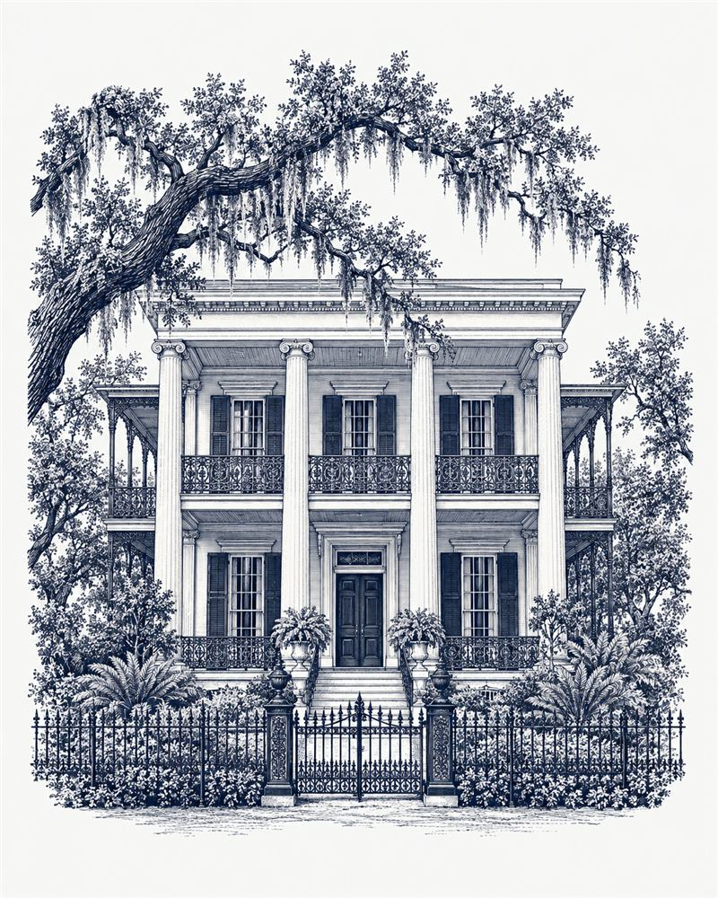

Chicago's Gold Coast
Historic revival houses sit alongside twentieth-century townhouses and apartments in the Astor Street District.
Neighborhood history for Chicago's Gold Coast ↗Preservation is a passion. Home is personal.
Chicago's historic homes,
in expert hands.
For the details worth protecting.
For the life you’ll build within them.
Chicago's only Historic Home Specialist (HHS) REALTOR®


 Meet Matthew
Meet MatthewAn eye for character. A heart for preservation.
Historic preservation is Matthew’s passion: protecting and honoring the homes that hold Chicago’s history, and helping their next owners do the same.
Matthew learned historic homes in New Orleans, earning his Historic Home Specialist (HHS) designation through the Preservation Resource Center of New Orleans. Today, he brings that perspective to Chicago’s Gold Coast, where he has sold homes since 2018, and historic homes throughout Chicago.
His 17+ years in residential and commercial real estate, together with a background in accounting, inform a careful approach to the details of a purchase or sale. He is a board member of the Gold Coast Neighbors Association in Chicago, serving on its Marketing and History & Education committees.
The difference is in the details
Buying a greystone on Chicago's Gold Coast or preparing to sell a historic home in Chicago? Start with the house itself: what is original, what has changed, and what needs care.
Look beyond square footage. Document original millwork, fireplaces, windows and restoration work, then compare condition and relevant sales before setting a price.
Bring in an inspector who knows older buildings. Review masonry, moisture, roofs and mechanical systems, with specialist evaluations where needed.
Check the exact designation and protected features early. A renovation plan should account for city review before materials, timing and budgets are settled.
Organize plans, permits and restoration records for the independent appraiser. One-of-a-kind homes deserve careful comparisons grounded in market evidence.
Pair its architecture and documented history with clear photography and a practical account of how the home lives today. Give buyers substance to connect with.
A sense of place
Architecture is part of the neighborhood’s identity. Understanding its history is a good place to begin.
The Astor Street District was designated a Chicago Landmark in 1975. Its nineteenth-century houses in historical revival styles are interspersed with twentieth-century apartment buildings and townhouses. City of Chicago ↗
Chicago's Gold Coast Historic District entered the National Register of Historic Places in 1978. The National Park Service’s record includes Italianate, Queen Anne and Moderne architecture. National Park Service ↗
For Chicago landmark district homes, permit work affecting protected features requires Commission on Chicago Landmarks approval; those features typically include exterior elevations visible from the public right-of-way. National Register listing is a separate designation and does not automatically impose local landmark rules. City permit guidance ↗ National Register guidance ↗
Qualifying rehabilitation may be eligible for preservation incentives, including a state property-tax assessment freeze for owner-occupied residential properties. Confirm eligibility and program requirements before including an incentive in your budget. City preservation incentives ↗
Character beyond one neighborhood
Chicago's Gold Coast is a starting point. These neighborhoods are examples of where Matthew works, alongside historic homes across the city.
Historic revival houses sit alongside twentieth-century townhouses and apartments in the Astor Street District.
Neighborhood history for Chicago's Gold Coast ↗Its historic brick and stone mansions include Victorian Gothic and Italianate designs.
Neighborhood history for Wicker Park ↗Small homes are part of the neighborhood’s early working-class housing history.
Neighborhood history for Bucktown ↗A substantial stock of older housing is part of the neighborhood’s architectural fabric.
Neighborhood history for Lincoln Park ↗Older residential buildings remain an important part of this lakefront community’s housing stock.
Neighborhood history for Lakeview ↗Its preservation story includes restored single-family houses, two- and three-flats, and coach houses.
Neighborhood history for Old Town ↗Historic greystone flats and substantial single-family houses line its landscaped boulevards and squares.
Neighborhood history for Logan Square ↗Own a historic home anywhere in Chicago? Let's talk.
Two cities. One preservation passion.
Matthew’s work with historic homes began in New Orleans, where he earned his HHS designation through the Preservation Resource Center of New Orleans.
Chicago is his primary focus today, and he continues to help buyers and sellers in New Orleans.
Talk about your New Orleans home ↗
Good questions, informed decisions
Practical questions about buying, caring for and selling a historic home.
Yes, but plan around the protected features. The Commission on Chicago Landmarks reviews permit applications for work affecting significant historic or architectural features, typically exterior elevations visible from the public right-of-way in a district. Confirm the property’s designation and proposed scope with the city before committing to alterations.
No. National Register listing does not automatically create local landmark designation or local historic-district rules. Federal listing alone generally does not restrict a private owner’s work unless federal assistance or permitting is involved. Check local designation and any other property-specific restrictions separately.
An independent appraiser evaluates the home and relevant comparable sales, considering differences such as location, size, condition and features. A distinctive house needs well-supported comparisons. Gather restoration records, plans and a clear description of period details so the appraiser has useful information; historic character alone does not guarantee a higher value.
Ask an inspector experienced with older homes to evaluate the roof, masonry and mortar, foundation, moisture and drainage, electrical service, plumbing and heating systems. Request permits and maintenance records, and arrange specialist follow-up where the inspector recommends it. Use the findings to plan a realistic repair budget before purchase.
Potentially. The City of Chicago lists a state property-tax assessment freeze for qualifying owner-occupied residential rehabilitation among its preservation incentives. Eligibility and rehabilitation requirements matter; confirm the current program rules for your property before budgeting. Landmark designation alone does not automatically lower your taxes.
Yes. Matthew serves historic homes across Chicago, including Wicker Park, Bucktown, Lincoln Park, Lakeview, Logan Square and Old Town. Start with a conversation about your home’s condition, distinctive features and restoration history to shape a pricing and marketing plan.
The next chapter
Buying, selling, or simply thinking about what comes next? Let’s talk about your historic home.